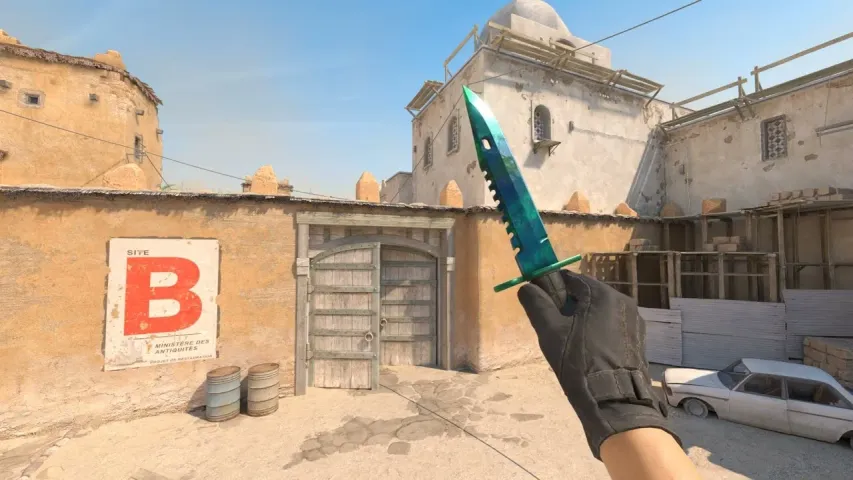
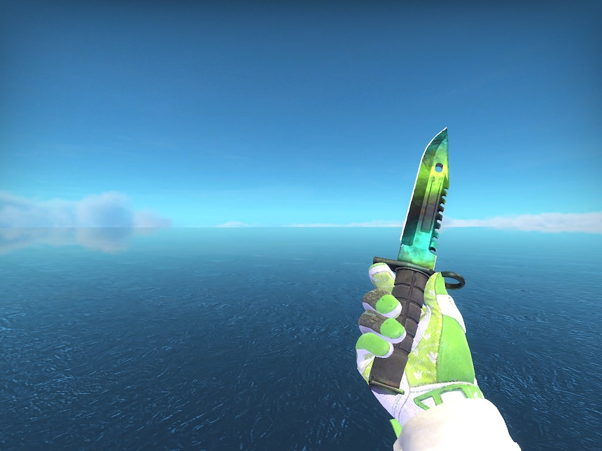

Five pattern families
One finish.
Different moods.
P1, P2, P3 and P4 are standard Gamma Doppler phases. Emerald is a separate, especially green-looking variant. The exact pattern seed changes how the colours sit on the blade.
Colour study
Phase 1
A cool mix of green and darker tones.




Phase names and overview: CS.MONEY Gamma Doppler guide. Colour descriptions here are simplified.